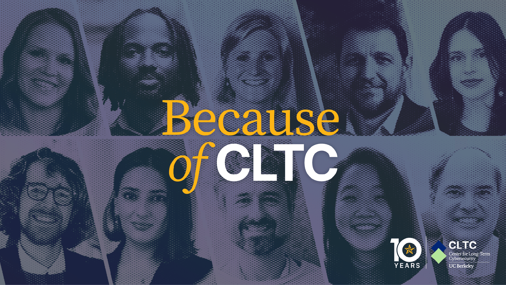
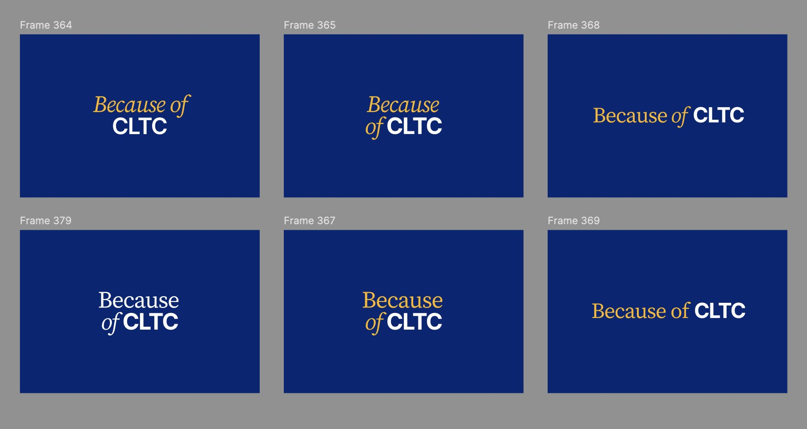
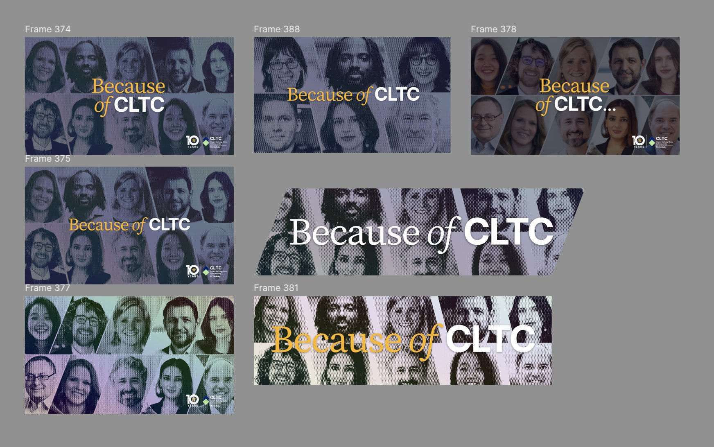

Client Center for Long-Term Cybersecurity at UC Berkeley
Because of CLTC
A visual campaign celebrating a decade of cyber-resilience innovation.
Overview
Ten years of impact, told by the people who lived it.
UC Berkeley’s Center for Long-Term Cybersecurity turned ten. They wanted a short video series to celebrate the decade, reach people on LinkedIn and raise money at the end of the year. I work on CLTC’s development team. For the anniversary I designed the campaign logo and the visual identity for the series and produced the donor videos.
The brief
Short, first-person, and built to ask for support.
| Episode | Story |
|---|---|
| #1 · Nov 18 | Intro: public-interest cyber and the Cyber Resilience Corps |
| #2 · Nov 26 | The UC Berkeley Cybersecurity Clinic and its spread to 25 states |
| #3 · Dec 2 | Giving Tuesday: student research on privacy and AI |
| #4 | Series spotlight: everyone featured so far |
| #5 · Dec 16 | Finale with CLTC leadership and UC Berkeley Chancellor Rich Lyons |
Identity
A serif “Because of” and a bold “CLTC”.
The wordmark pairs an italic serif with a heavy sans: the story half and the institution half. I tested stacking, line breaks and colour on UC Berkeley navy, then layered it over halftone portraits of the people in the series.



The series
Craig Newmark reposted the donor videos, the first one without being asked.
See the series on LinkedIn ↗